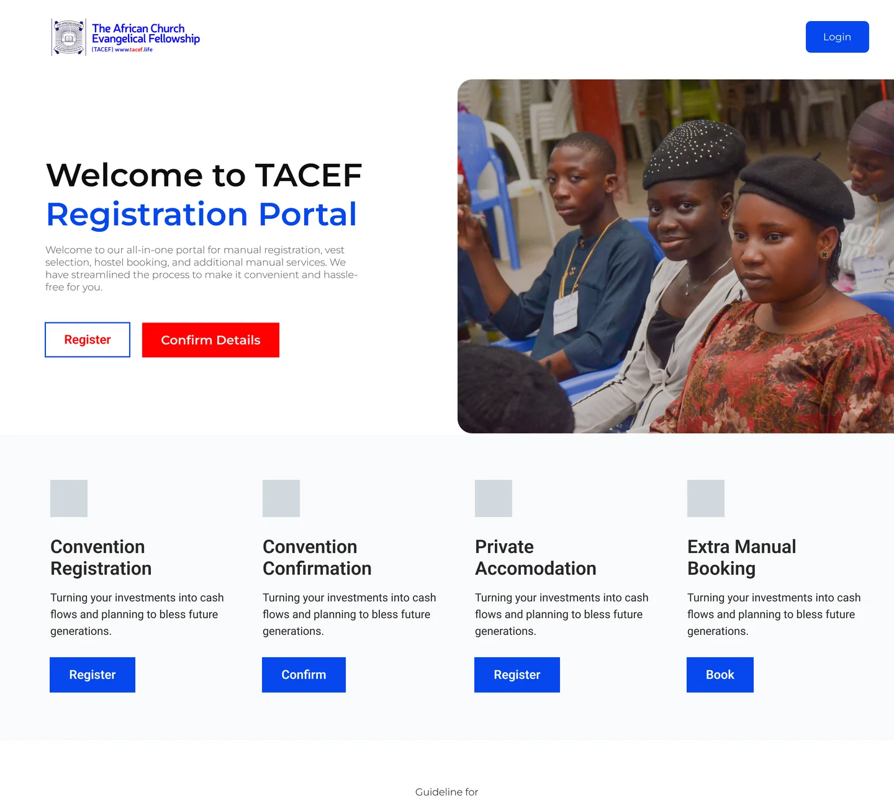
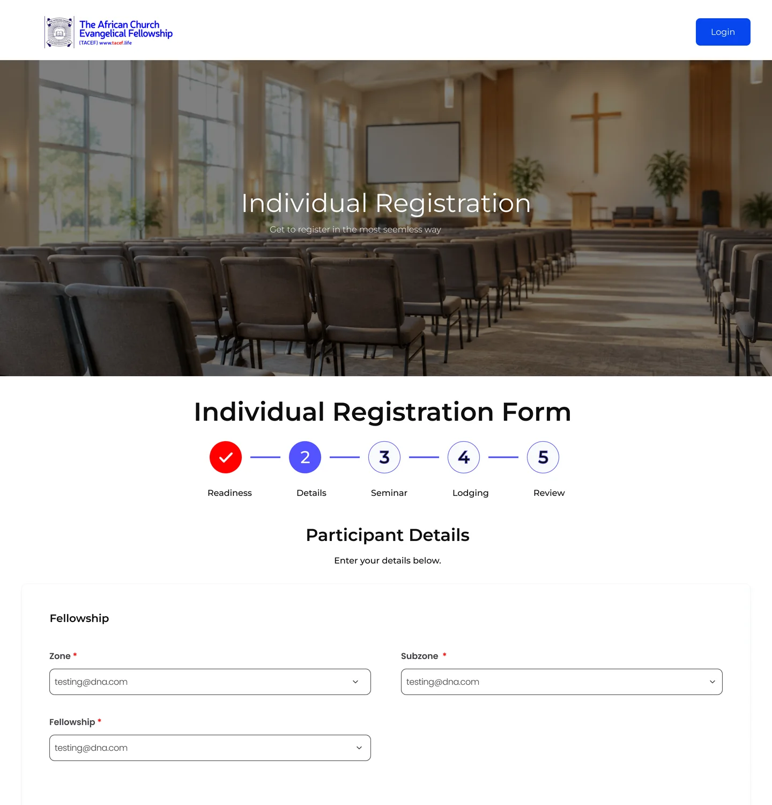
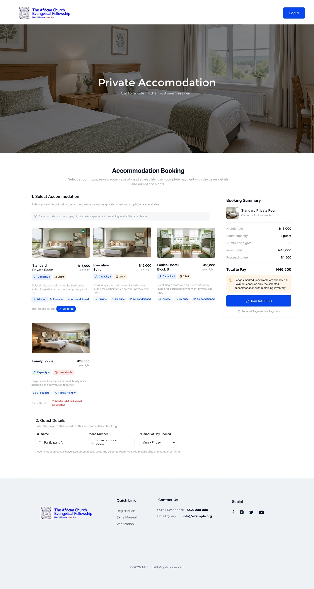
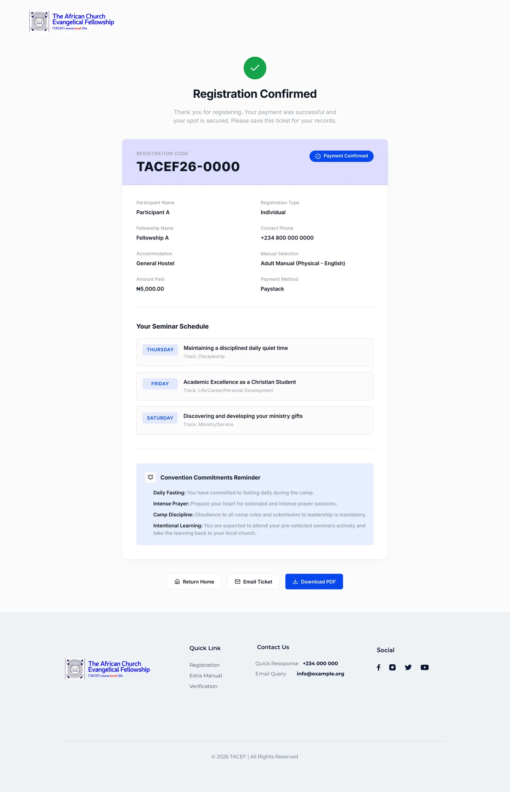
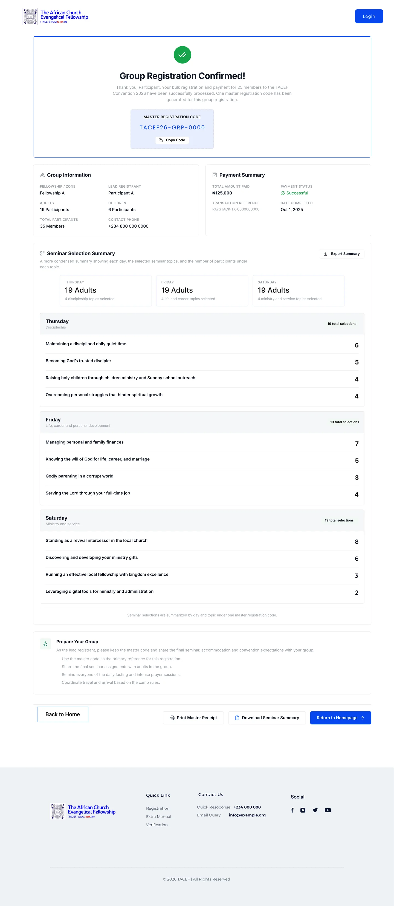
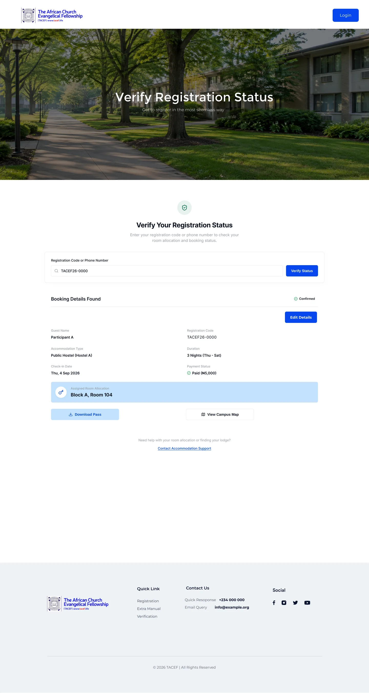
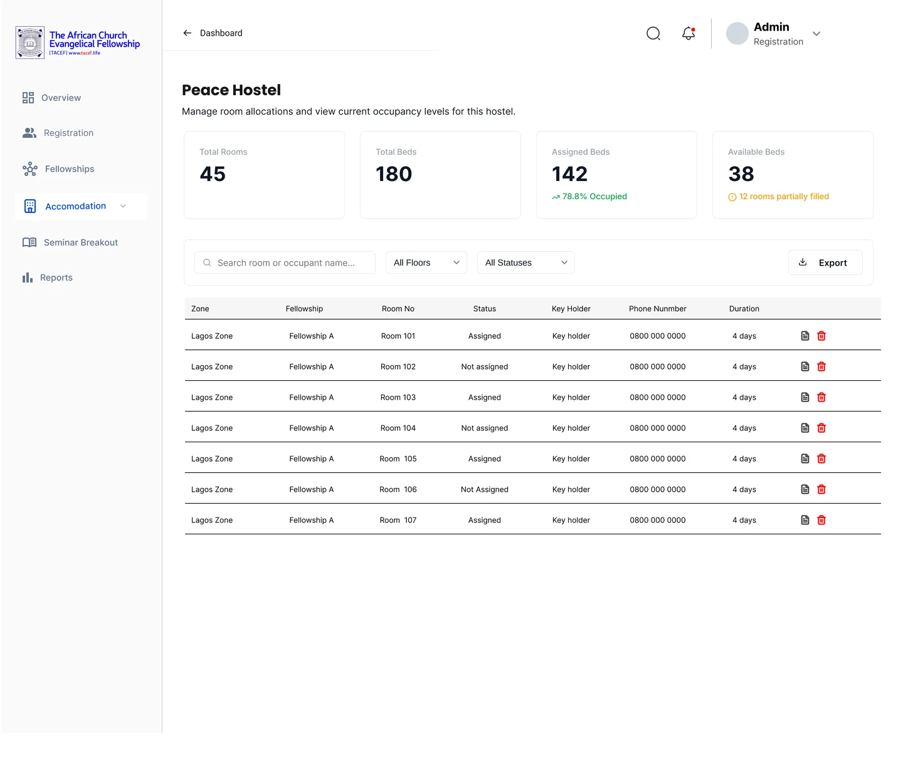

FIG. 02 — LIVE PRODUCT
TACEF: a registration system that assumes nothing and verifies everything.
Registration, payment and accommodation for a large convention, designed from a 9-page PRD for attendees and for a network of zonal and fellowship admins.
- Role
- UX Designer
- Timeframe
- 1 month
- Tools
- Figma, Zoom
- Focus
- Zero-trust UX, role-based access

Sample data: names, phone numbers, emails, codes and totals are replaced. Some images are generated for illustration.
The challenge
Sensitive attendee data, real money and many admins. Every screen had to assume nothing and verify everything.
- AttendeesRegister alone or as a fellowship
- Zonal adminsManage their zone
- Fellowship adminsManage their fellowship
- Registration teamChecks and allocates
Working from a 9-page PRD, I identified the need for a zero-trust UX approach.
Process
How the work went.
- Read the PRDA 9-page document covering sensitive attendee data and payments.
- FrameChose a zero-trust approach: every screen verifies, none assumes.
- DesignPayment gate, fixed lists, role-based navigation and an audit log.See the screens →
- Hand offFigma components and a reusable library. Developers owned the build.Handoff →
The attendee journey
Six screens, each answering a risk.
Each screen shows what it replaced or prevented (Before), what I designed (After) and why. Select a screen to open it full size.

01 · Entry
One front door, four clear services.
Before Registration, confirmation, lodging and extra manual booking were separate tasks for attendees and for the team handling manual requests.
After A single portal with four service cards and two main actions, Register and Confirm Details, with the payment rules stated on the same page.
Why People arrive knowing what to do and how to pay before they start.

02 · Register
Five short steps, fixed lists.
Before Free typing on fields like Zone and Fellowship was a common source of errors in the data.
After A five-step form (Readiness, Details, Seminar, Lodging, Review) where Zone, Subzone and Fellowship are chosen from lists.
Why Consistent data for admins, and attendees only see one small part of the form at a time.

03 · Lodging
Show what is left before taking payment.
Before Rooms are limited and shared across many attendees, so an unavailable room could be requested and paid for.
After Room cards show price, capacity and how many are left. A full room is marked Unavailable, and the summary shows nights and the total before paying.
Why Payment only confirms accommodation that still has space.

04 · Confirm
The confirmation is the proof.
Before Without a clear confirmation, attendees and admins have no shared record that a payment went through.
After A confirmation with the registration code, a Payment Confirmed badge, the details provided, the seminar schedule and actions to email the ticket or download a PDF.
Why One page the attendee can keep and an admin can check against.

05 · Group
A fellowship registers as one group.
Before Registering many members one by one is slow and hard to reconcile.
After A master registration code, group information, a payment summary and the seminar choices per day, with options to print the receipt or download the summary.
Why The lead registrant has one reference for the whole group.

06 · After booking
Look up a booking without logging in.
Before Attendees would need to contact the team to learn their booking or room.
After A lookup by registration code or phone number that shows the booking, payment status and assigned room, with a pass to download and a campus map.
Why Fewer questions to the team, and no account to create.
The admin side
What the team sees.
07 · Admin overview
Admins see the numbers that matter first.
Before Admins across many zones and fellowships need a quick read on registrations and payments.
After Totals for participants, zones, payments received and pending, a demographic chart, registrations per zone and the latest registrations.
Why A single view to spot what needs attention.

08 · Accommodation admin
Room allocation at a glance.
Before Assigning beds by hand makes it easy to miss which rooms are full or empty.
After Totals for rooms and beds, occupancy, a filterable room list with status and key holder, and an export.
Why Allocation stays accurate and easy to check.
Safeguards
Four safeguards, built into the interface.
01Payment-gated workflows
The allocation service stays unavailable until payment is confirmed, preventing unauthorised use of resources.
02Standardised data entry
Free typing is turned off on fields like Zone and Fellowship, replaced with a fixed list of options to remove a common source of errors.
03Role-based access
A hierarchical navigation where admins see only what they’re authorised to manage, cutting cognitive load and the risk of exposing data by accident.
04Audit-ready dashboards
A backstage log of every override or allocation change, so actions stay accountable at scale.
Handoff
Built to hold up year after year.
I delivered development-ready Figma components and a reusable component library, including status badges and standardised inputs, so the platform stays consistent as it’s reused for each year’s convention. Developers owned the implementation.